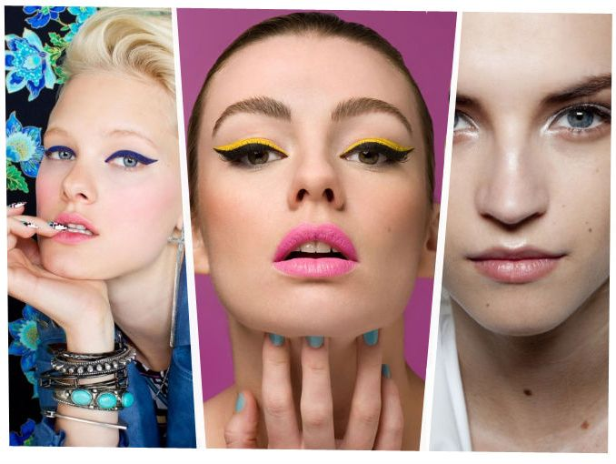

Makeup trends 2019 💄
Lip Gloss
Se viene una tendencia para las que nos sentíamos soñadas a principios de los 2000´s cuando lo único que nos dejaban usar nuestras mamás era un brillo labial, pero ahora es un gloss metálico super bold que te ayudará a acentuar tus labios. Este que les dejo es de la marca Lurrose:
Tienen una variedad de colores para adaptarse a cada estilo y ocasión. La barra de labios de metal mate es encantadora. EFECTOS DE VELVETE PIGMENTADOS Y MATE - Estos tonos son hermosos colores, pigmentados y continúan sin problemas. Se seca y queda mate casi instantáneamente sin resecar los labios. Son de una calidad tan buena que no son difíciles de quitar y se secan con colores muy pigmentados para complementar todo tipo de piel. Esta barra de labios viene en una variedad de colores y acabados vibrantes e inolvidables.
Y para quienes preferimos un look más natural les recomiendo la línea de COVERGIRL Colorlicios Gloss, son 13 tonos distintos en una gama muy neutra para el día a día.
El "no makeup look"
Para quienes gustan de un look natural es recomendable este maquillaje ya que se basa en llevar lo mínimo, enfocándose más en la aplicación que en la cantidad de los productos. Este look es lo contrario a lo que hemos visto en Instagram refiriéndome a las cejas audaces, base de maquillaje de cobertura total y delineados extravagantes.
Para conseguir este look necesitas lo siguiente:
1.- Este look se trata de tener luz en el rostro y una piel natural por lo que se recomienda tener un cuidado especial de la piel usando cremas hidratantes o mascarillas hidratantes.
2.- Necesitas un primer (pre base) para tener una base suave en la que puedas trabajar (Te dejo este link sobre los primers).
3.- Lo ideal para este look es una cobertura ligera que puedes lograr con BB y CC creams, es recomendable que tu base de maquillaje tenga protector solar, (Te dejo este link sobre los tipos de bases).
4.- Usa un corrector liviano para corregir las imperfecciones, pero sólo cuando sea necesario.
5.- Para que todo se vea natural y lo puedas mezclar bien se recomienda que los productos que uses sean cremosos.
6.- Utilizar iluminador te ayudará a darle la luz a tu rostro y tener un brillo muy natural.
7.- Un rostro con color es un rostro sano, por lo que se recomienda usar rubor en crema que permita dejar un color muy natural en tu piel.
8.- Las cejas siempre son un must ya que estas enmarcan tu rostro, en este caso el uso del un gel de cejas para rellenarlas y dejarlas en su lugar es una herramienta perfecta.
9.- Puedes usar una mascara para pestañas liviana o no. Esto ya depende de tu gusto.
10.- Por último, labios naturales con un poco de tinta para labios.
Visión geométrica

Llevar un cat-eye a otro nivel, eso es lo que pretende esta tendencia ya que te permite jugar con tu lado creativo haciendo tu maquillaje más gráfico, además te permite convertir tu rostro en un lienzo el cual te permite ser tan artística como lo desees.
Glitter y color (mascara para pestañas, delineador, sombras)
Esta tendencia va muy de la mano con la anterior ya que con el uso del glitter y del color te permite jugar y ser más creativa al momento de realizar tu maquillaje. Lo interesante de las tendencias de este año es que hay de todo para todos los gustos, por una parte regresa el uso del gloss y el no makeup y por otro lado tenemos el uso del maquillaje para ser mas audaces y experimentar con nuestro lado creativo.
A continuación te dejo algunos ejemplos de esta tendencia:
Glitter
Máscara de pestañas de colores
Delineador de colores

Sombras de colores
Labios audaces (coral, durazno y neones)
Espero les sirva esta información para estar al 100% en las tendencias de este 2019, si les gustó compártanlo con sus amigos y en sus redes sociales.
Mis Herramientas de trabajo
Laptop: Acer Aspire R15 Convertible
Cámara: Nikon D5300
Celular: Oneplus 3T